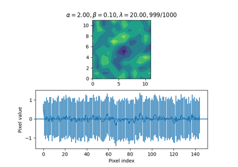

Demo scripts
Online Bayesian linear regression

Anesthetized cat V1 simple cell
Anesthetized cat V1 simple cell

Tracking

Sampling from a Discrete Wiener Process Acceleration Model
Sampling from a Discrete Wiener Process Acceleration Model


Comparison between EM and gradient ascent for tracking a simulated mouse
Comparison between EM and gradient ascent for tracking a simulated mouse

Comparison between EM and gradient ascent for tracking a foraging mouse
Comparison between EM and gradient ascent for tracking a foraging mouse

Filtering of a foraging mouse trajectory with manual vs learned parameters
Filtering of a foraging mouse trajectory with manual vs learned parameters